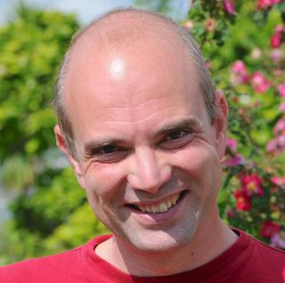

Robotics and Sensors Using Erlang on Embedded Systems with GRiSP
Robotics and Sensors Using Erlang on Embedded Systems with GRiSP
GRiSP allows you to build Erlang systems running on bare metal embedded hardware. You can build robots, climate control systems and many other things. Peer will showcase and demo a robotics system, show how it's built and how they have used Erlang on the hardware itself. He'll describe all parts, so you can build your own applications.
Talk objectives:
- To show how easy it is to build embedded applications with Erlang and GRiSP.
Target audience:
- Hackers and tinkerers, people who know Erlang but want to get involved with embedded development, people working with hardware who are interested in using Erlang.
About Peer
Peer ported Erlang to Hard-Realtime Operating system RTEMS (www.grisp.org). He developed the Hydraprog automotive control unit flashing device, which has been used successfully all over the world for over a decade. Since 2007 the firmware of the device is written mainly in Erlang - including protocol stacks for all existing automotive protocols. Peer is currently developing an industrial transport system controller with Erlang in a small embedded system.
Peer's previous experience ranges from low level device drivers to functional languages in industrial and automotive applications, he initially mastered in Physics at the Technical University Munich. He has been working self-employed as a developer since 1987 and also consulted in applied cryptography and protocol design and implementation.
He is currently living and working in the idyllic countryside west of Munich, Bavaria.
Twitter: @peerstr